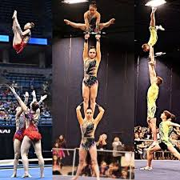

Acrobatic gymnastics

~Home |
| Aerobic Gymnastics~
What is acrobatic gymnastics?
- Acrobatic Gymnastics, Acro for short, combines the beauty of dance and the strength of gymnastics in a partner sport that displays grace, strength, flexibility and excitement.
- Athletes perform routines on a 40×40 spring floor in one of the following: Men’s Pair, Women’s Pair, Mixed Pair, Women’s Group (3) or Men’s Group (4). Athletes progress through recreational levels (1-3) to compulsory Ievels (4-7), then to optional levels (8-elite).
- Acrobatic Gymnastics is fun for athletes of any age and athletic ability.
- Click here for more info:
Extra info on acrobatic gymnastics
"Back To Home"